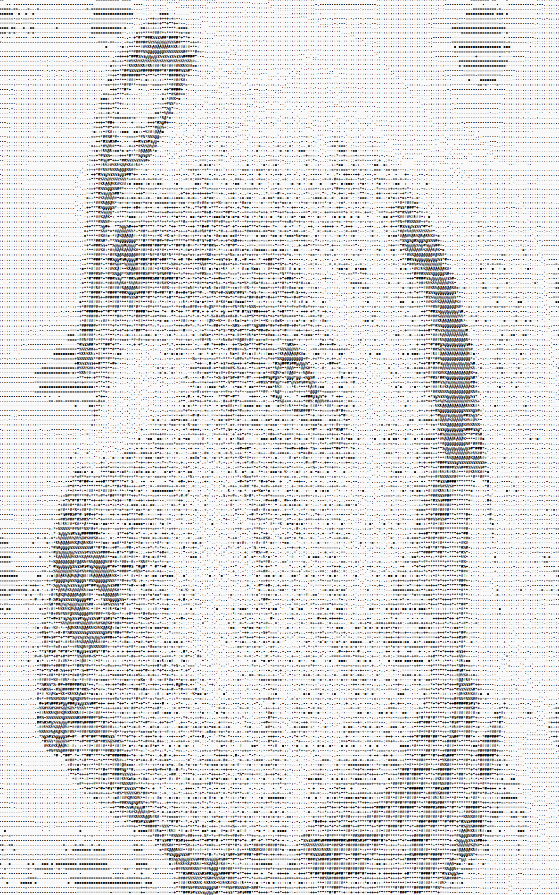
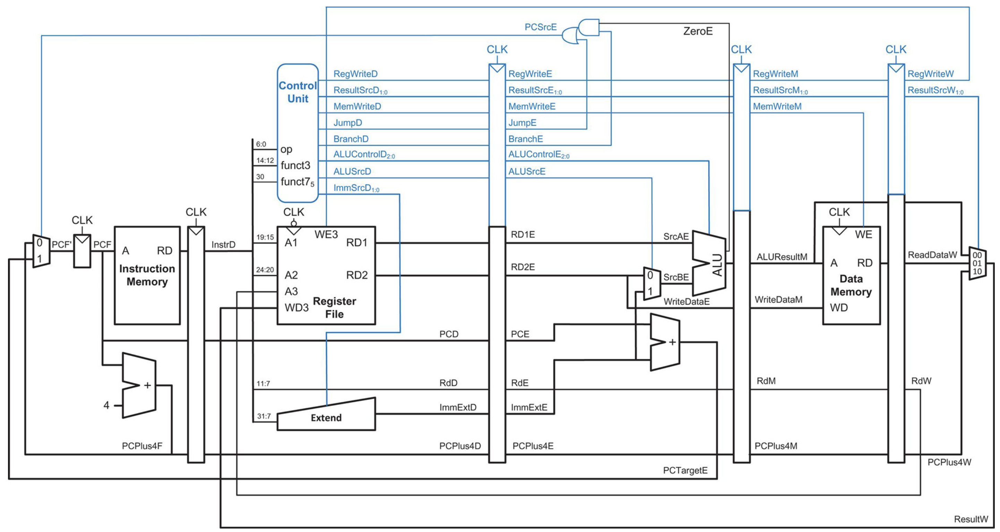
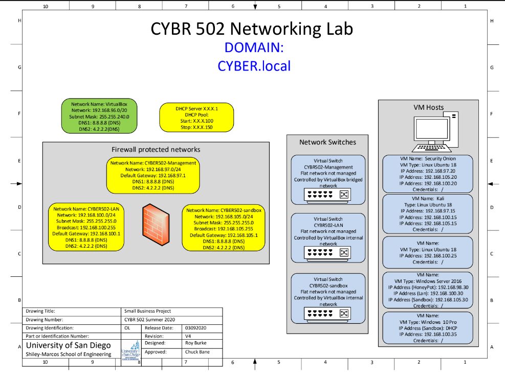
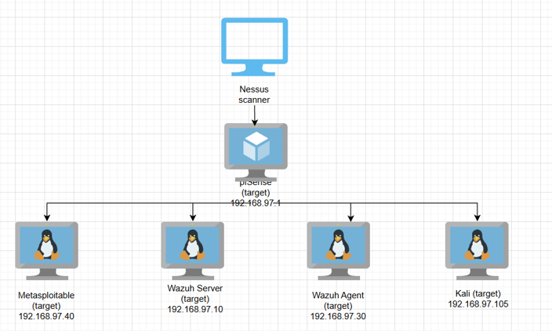
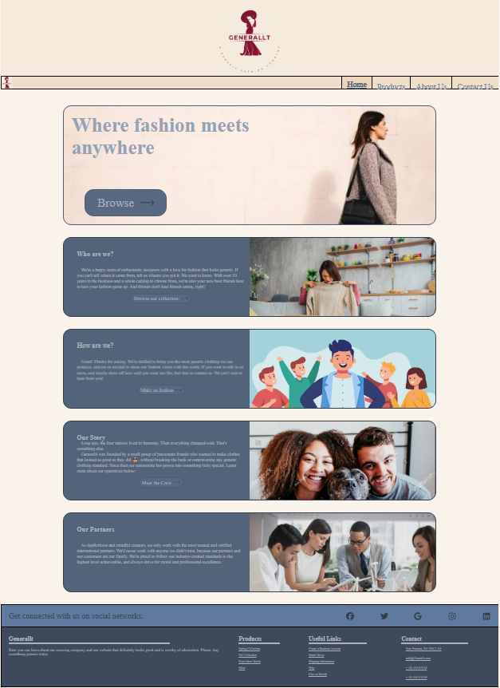
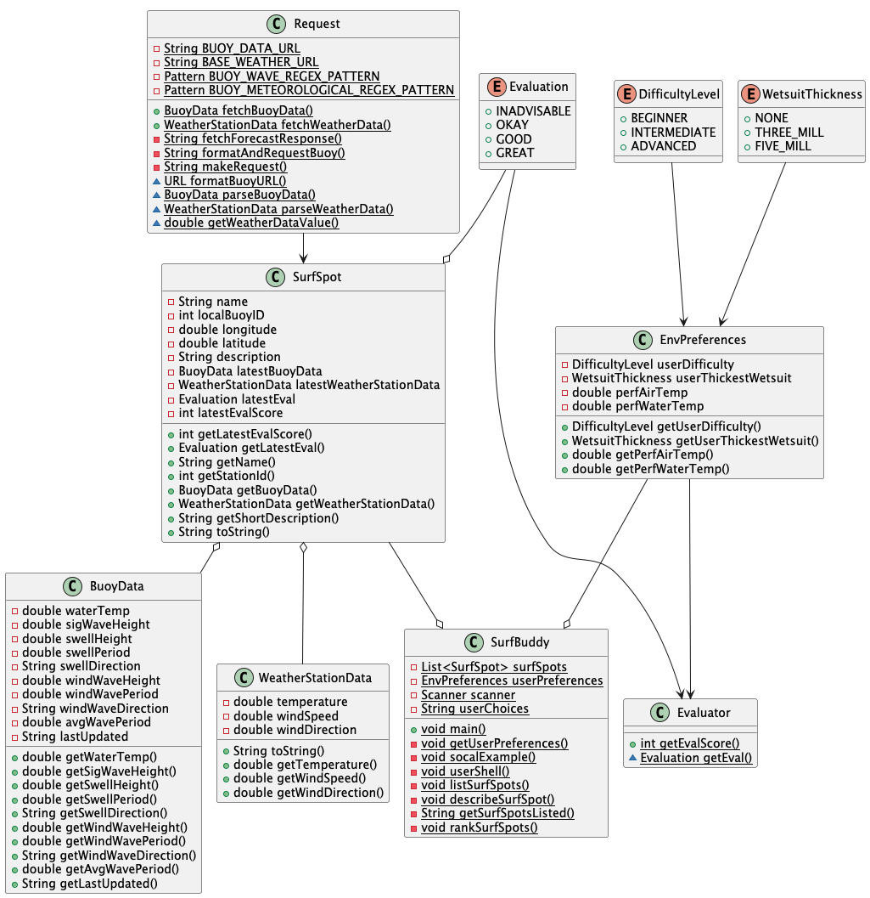

Andrew McElhannon
About Me
Who I am
My Name is Andrew McElhannon, and though I'm from the East Coast, I'm a graduate of the University of San Diego. I graduated in May 2026, with a BA in computer science and concentration in cybersecurity.
Professional info
I've taken numerous courses in computer science, with an emphasis on OOP and design principles. In the future, I'd love to learn more about AI (CNNs, Pathfinding algorithms) and Cybersecurity.
I've also been lucky enough to benefit from the instruction of amazing professors both domestic and internationally, which I feel has allowed me to learn in a truly unique way.
Hobbies
In my freetime, I enjoy the great outdoors when I can (hiking, walking, parks, exploring new places with friends). I also love speakers and home theater, and I think everything should have a good sound system.
Projects

Overview
To help keep my skills sharp, I embarkerd on a personal project to create an image converter interface, trying my hand at image processing and creating a scalable project.
Project Design
There is currently only one converter- ASCII art, but I designed the project to be able to be heavily customizeable. It is currently a command-line only interface, and users have the options to apply simple image preprocessing (inversion, blurring, brightness, etc.) to prepare an ASCII subject. The image can then be submitted to a converter, which allows ASCII gradients to be specified, the option of different brightness calculations, and a inverted pixel to character scaling factor.
In the future, I hope to implement edge detection, so that the ASCII art can capture edges better, and use ArrayLists for equal luminance options. This would make the art easier to see/able to scale down more, as well as add more character variety. A distant plan is to launch a webpage version with control sliders for even more customization.
For now, the project can be found here
Overview
As part of my university's senior project pairing, I was lucky enough to work with the CEO of Adversys as a mentor, who is also a professor at our school.
Adversys is a cybersecurity tool based on the VSCode editor that allows the usage of user-specified AI agents, similar to Cursor, but with the added extensionality of a suite of cybersecurity focused tools.
Project Contributions
Three other CS seniors and I have the current task of modifying the existing code base to support further integration of the embedded AI agents and cybersecurity tools, while adhering to the moden concepts of agile workflow and sprints, as might be expected in a software engineering role.
Our current plan aims to have AI agents scan for vulnerabilities using existing Adversys tools and generate remediation reports based on its findings. The goal is for safe, helpful and secure automation.

Overview
As a final project in my university's networking class, my project partner and I designed a client-server music streaming application using TCP sockets to transmit binary audio and resource requests.
Project Design
We ended up building a fully functioning web server, complete with our own custom application protocol, request validation, and error detection. We resolved compatability issues between Java and C, performed data serialization, and listened to our professor's glorious acapella renditions to test our server.

Project based on schematic shown here, reproduced from the class textbook titled Digital Design and Architecture Risc-V edition by Sarah Harris and David Harris
Overview
As the final project for a class called Digital hardware, a partner and I had to improve a pipelined processor design described in our textbook, with edits made by our professor. This was primarily done in SystemVerilog, a HDVL language, and involved concepts of forwarding and inter-stage registers to handle data hazards.
Project Design
The processor is proven by a series of benchtests, which are formatted instructions that are fed into the processor, whose results and signal waveforms are checked, sometimes manually, against expected values.
The end result of this project is not a virtual machine coded from scratch, far from it, but instead a single functioning processor. It is rather the understanding and background that was neccessary and taught to me through my course that is the result and what I am most proud of. I have a very strong respect for the industry and people that are involved in the manufacture of not just just single processors, but entire standalone devices.


Overview
As a student progresses through my university's cybersecurity program, they slowly build up a virtual network in order to complete assigned labs and exercises. These labs include the process of building a VM network, of installing and configuring a virtual firewall, and performing attacks such as brute-force password guessing.
Project Design
The course was a bit in flux during my enrollment, and so the network that was eventually deployed deviates from the original blueprint by the exclusion of a security Onion and Windows server, and the addition of a pfSense firewall, a Wazuh server, and a Wazuh agent. This is shown in a simplified network diagram partially created by one of my peers. Beyond that, the implementation and skills required are much the same.

Overview
While studying abroad in Rome, I was enrolled in HTML and CSS class. The final project was to personally design, code, and build a fully interactive web page. I ended up making an online clothing store for a made-up company I named Generallt.
Project Design
The whole project itself took about three weeks, during which I spent about 30 hours going from notepad sketches to a built website. I used VSCode and some helpful extensions to build it, and the majority of my time was spent organizing and styling. I found it was one thing to recreate an example webpage in class, and quite another to design everything yourself. Having each web page be navigable, clear, and coherent with each other is hard! I ended up redesigning the entire projet several times, but I'm proud of the end result. I think it's a solid project filled with little easter eggs and effort, but in the future if I have more time I may update it with pop-up banners and a more convincing checkout.
A link to the project can be found here

Overview
In a comp class, my friends and I were given the task of creating a final project for the semester. Using the opporunity, we decided to make something that would be extra-helpful to one our group members, who is an avid surfer.
Using weather data pulled from government buoys and weather stations and a short questionnaire/evaluation algorithm of our own design, we created a system that allows a user to view real-time surfdata and get surf spot recommendations, right from the comfort of the computer terminal.
Project Design
On setup, SurfBuddy object is initialized and populated with surfSpots- a class representing individual surfing locations. It contains info such as a short description, geographical position, and the nearest NOAA buoy. The geographical position and buoy name are used to request data object from a specialized Request class, which is connected to both the NOAA and NDBC APIs.
Then, using the terminal, a user fills out a short questionnaire, populating an EnvPreferences object. This is used by the Evaluator class, which uses user's responses and a homemade algorithm to rate a SurfSpot's desirability.
The user is able to choose from the following options:
- The ability to list all given surfSpots. For the purpose of this project, SoCal surfing locations were chosen as sample data.
- The ability to look at each surfSpot individually
- The ability to look at a list of surfSpots ranked by desirability
Implementation
I was personally responsible for much of the overview design (separating classes, choosing methods) and for implementing the SurfSpot and SurfBuddy class.